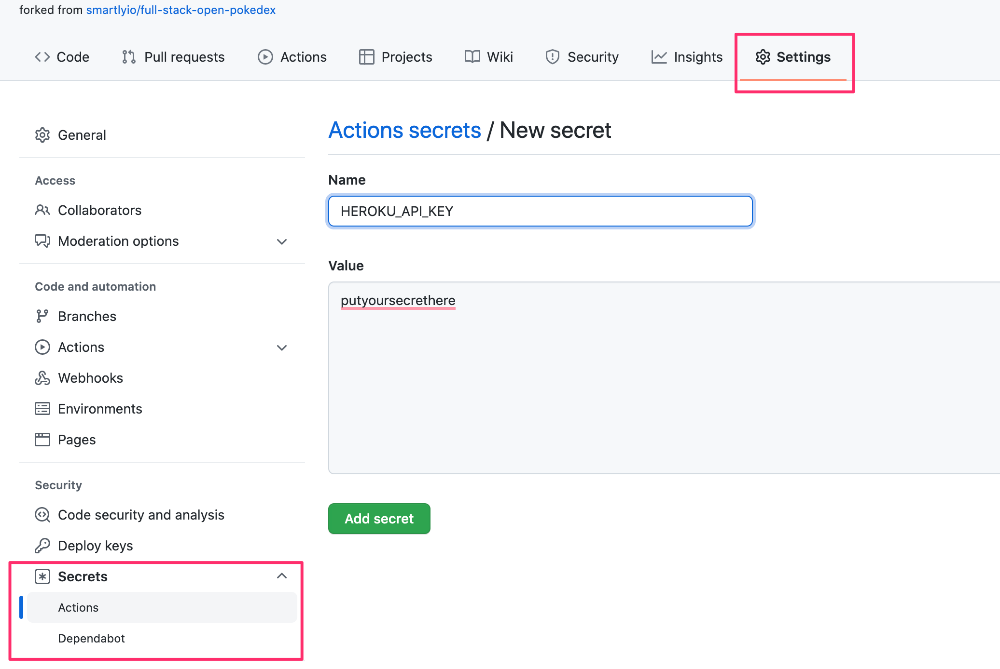
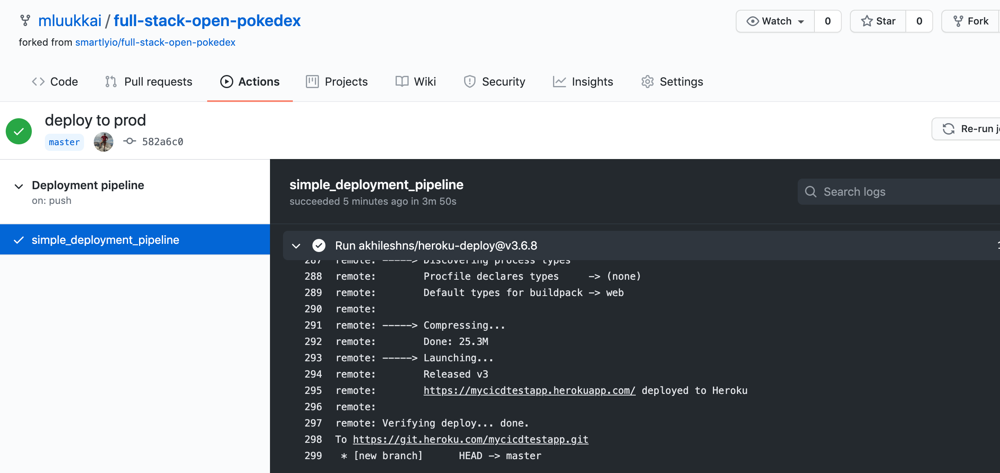
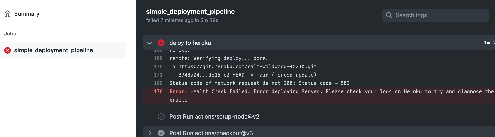
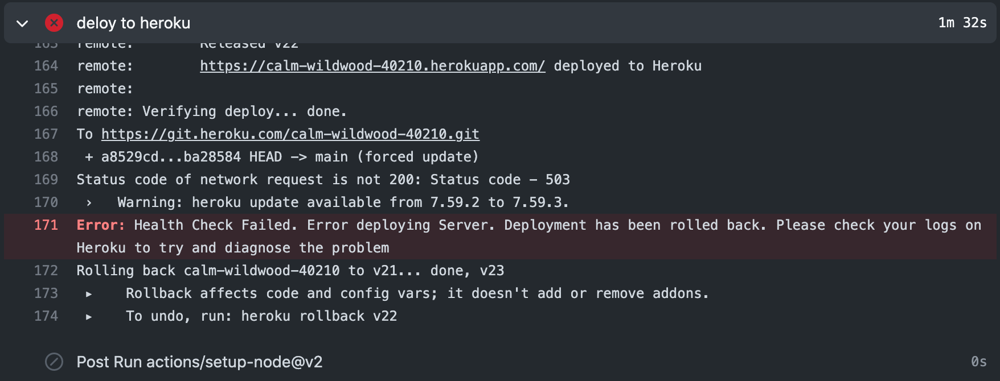
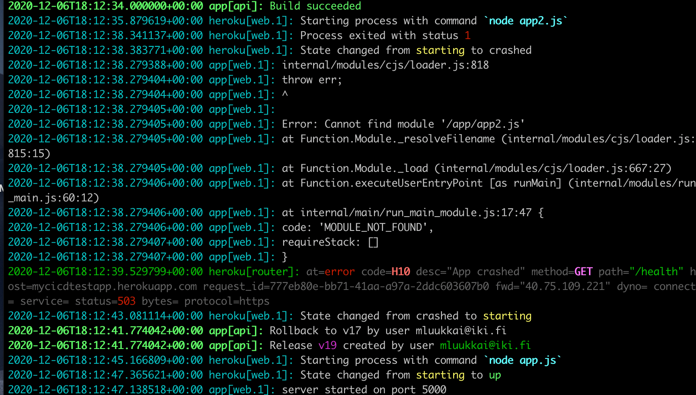

在写好了一个漂亮的应用之后，是时候考虑我们如何将其部署到真正的用户中去了。
在本课程的第三章节中，我们通过简单的推送git仓库到云提供商Heroku的服务器来实现。至少与许多其他类型的托管设置相比，在Heroku中发布软件是相当简单的，但它仍然包含风险：没有什么能阻止我们意外地将破损的代码推到生产中。
接下来，我们要看一下安全部署的原则，以及在小规模和大规模部署软件的一些原则。
Anything that can go wrong...
我们想定义一些关于我们的部署过程应该如何工作的规则，但在这之前，我们必须看看现实的一些限制。
"墨菲定律 "的一个措辞认为。
"任何可能出错的事情都会出错。"
当我们计划我们的部署系统时，记住这一点很重要。我们需要考虑的一些事情可能包括。
-如果我的电脑在部署过程中崩溃或挂起怎么办？
- 我连接到服务器并通过互联网进行部署，如果我的互联网连接中断了会怎样？
- 如果我的部署脚本/系统中的任何特定指令失败会怎样？
- 如果由于某种原因，我的软件在我部署的服务器上不能按预期工作，会发生什么？我可以回滚到以前的版本吗？
- 如果一个用户在我们进行部署之前对我们的软件做了一个HTTP请求（我们没有时间向用户发送响应）会发生什么？
这些只是部署过程中可能出错的一小部分，或者说，我们应该计划的事情。无论发生什么，我们的部署系统都绝不应该让我们的软件处于破碎状态。我们也应该总是知道（或者很容易找到）一个部署处于什么状态。
当涉及到部署（和一般的CI）时，要记住的另一个重要规则是。
"无声的失败是非常糟糕的！"
这并不意味着故障需要显示给软件的用户，它意味着如果有什么问题，我们需要意识到。如果我们意识到一个问题，我们就可以修复它，如果部署系统没有给出任何错误，但却失败了，我们可能最终会陷入这样一种状态：我们认为我们已经修复了一个关键的错误，但部署却失败了，把这个错误留在了我们的生产环境中，而我们却没有意识到这种情况。
What does a good deployment system do?
为部署系统定义明确的规则或要求是困难的，无论如何让我们尝试一下。
- 我们的部署系统应该能够在部署的任何步骤中优雅地失败。
- 我们的部署系统应该永远不会让我们的软件处于崩溃状态。
- 我们的部署系统应该让我们知道何时发生了故障。通知失败比通知成功更重要。
- 与全面部署相比，这种回滚最好更容易做到，而且不容易失败。
- 我们的部署系统应该处理用户在部署之前/期间发出HTTP请求的情况。
- 我们的部署系统应该确保我们正在部署的软件符合我们为此设定的要求（例如，如果没有运行测试就不要部署）。
让我们在这个假设的部署系统中也定义一些我们**想要的东西。
- 我们希望在部署期间没有停机时间（这与我们在部署之前/期间处理用户请求的要求不同）。
Exercises 11.10-11.12.
在进行下面的练习之前，你应该在Heroku环境中设置你的应用，就像我们在第三章节中所做的那样。
与第三章节相比，现在我们不自己推送代码到Heroku，我们让Github Actions工作流为我们做这件事!
确保你现在已经安装了Heroku CLI，并使用CLI以heroku login登录到Heroku。
使用CLI在Heroku中创建一个新的应用：heroku create --region eu {your-app-name}，选择一个靠近你自己位置的region!(你也可以不填应用，Heroku会为你创建一个应用名称)。
使用命令heroku authorizations:create为你的Heroku配置文件生成一个API令牌，并将证书保存在本地文件中，但不要将这些证书推送到GitHub!
在你的部署工作流程中，你很快就会需要这个令牌。请看关于Heroku令牌的更多信息这里。
11.10 Deploying your application to Heroku
用一个步骤来扩展工作流程，将你的应用部署到Heroku。
下面假设你使用社区开发的现成的Heroku部署动作AkhileshNS/heroku-deploy。
你需要你刚创建的用于部署的授权令牌。把它的值传递给GitHub Actions的正确方法是使用仓库的秘密。

现在工作流可以访问令牌值，如下所示。
${{secrets.HEROKU_API_KEY}}
如果一切顺利，你的工作流日志应该有点像这样。

然后你可以用浏览器试试这个应用，但很可能你会遇到一个问题。如果我们仔细阅读第三章节的"应用到互联网"一节，我们注意到Heroku假定版本库有一个叫做Procfile的文件，告诉Heroku如何启动应用。
所以，添加一个合适的Procfile，确保应用正常启动。
记住，在玩产品部署时，随时关注服务器日志中发生的事情是非常必要的，所以要尽早使用heroku logs，并经常使用它。不，是一直使用它!
11.11 Health check
在继续之前，让我们用一个更多的步骤来扩展工作流程，一个确保应用在部署后正常运行的检查。
实际上不需要一个单独的工作流步骤，因为行动
deploy-to-heroku包含一个选项来处理这个问题。
添加一个简单的端点，用于在后端进行应用健康检查。例如，你可以复制这段代码。
app.get('/health', (req, res) => {
res.send('ok')
})
在应用中设置一个假的端点也是一个好主意，这样就可以进行一些代码修改，并确保部署的版本真的发生了变化。
app.get('/version', (req, res) => {
res.send('1') // change this string to ensure a new version deployed
})
现在从文档中查看如何在部署步骤中包含健康检查。使用创建的健康检查URL的端点。你很可能还需要checkstring选项来使检查工作。
如果一个部署破坏了你的应用，确保Actions注意到。你可以通过写一个错误的启动命令到Procfile来模拟这个情况。

在进入下一个练习之前，修复你的部署，并确保应用再次按计划运行。
11.12. Rollback
如果部署导致应用损坏，最好的办法是回滚到以前的版本。幸运的是，Heroku让这变得非常容易。每次部署到Heroku都会产生一个release。你可以用heroku releases命令查看你的应用的发布。
$ heroku releases
=== calm-wildwood-40210 Releases - Current: v8
v8 Deploy de15fc2b mluukkai@iki.fi 2022/03/02 19:14:22 +0200 (~ 8m ago)
v7 Deploy 8748a04e mluukkai@iki.fi 2022/03/02 19:06:28 +0200 (~ 16m ago)
v6 Deploy a617a93d mluukkai@iki.fi 2022/03/02 19:00:02 +0200 (~ 23m ago)
v5 Deploy 70f9b219 mluukkai@iki.fi 2022/03/02 18:48:47 +0200 (~ 34m ago)
v4 Deploy 0b2db00d mluukkai@iki.fi 2022/03/02 17:53:24 +0200 (~ 1h ago)
v3 Deploy f1cd250b mluukkai@iki.fi 2022/03/02 17:44:32 +0200 (~ 1h ago)
v2 Enable Logplex mluukkai@iki.fi 2022/03/02 17:00:26 +0200 (~ 2h ago)
v1 Initial release mluukkai@iki.fi 2022/03/02 17:00:25 +0200 (~ 2h ago)
只需在命令行中使用一个命令，就可以快速地进行回滚到一个版本。
更棒的是，deploy-to-heroku这个动作可以为我们解决回滚的问题!
所以请再次阅读文档并修改工作流程，以完全防止部署失败。你可以再次通过破坏Procfile来模拟一个破坏的部署。

确保应用在中断部署的情况下仍能保持运行。
注意，尽管有自动回滚操作，但构建还是失败了，当这种情况在现实生活中发生时，找到导致问题的原因并迅速修复它是至关重要的。像往常一样，开始找出问题原因的最好地方是研究Heroku的日志。
